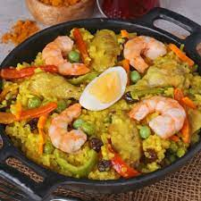

Valenciana

Valenciana ala Bacolod
Valenciana is a staple at a Bacoleno's feast.
I have not seen this dish in any Cebuano speaking regions. I
believe this is distinctly a Negrosanon tradition.
Ingredients
- Atchuete
- Sticky Rice
- Liver
- peas
- Seafood
Steps
- Saute the meat and seafood.
- Add the broth. Bring to a boil.
- Add the rice. Bring to boil. Mix occasionally.